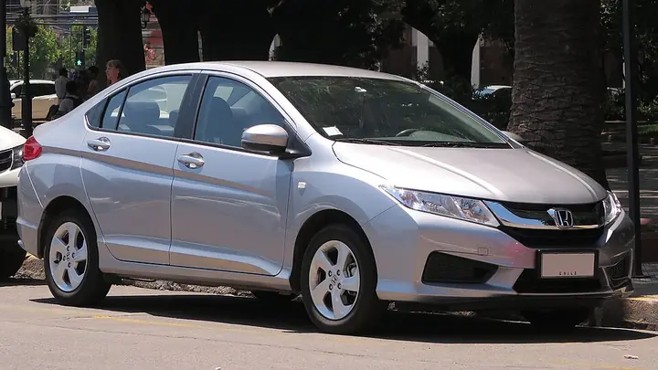
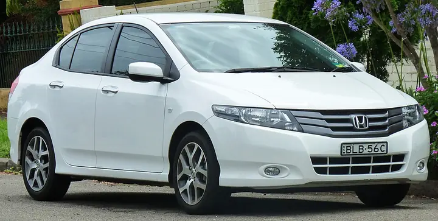
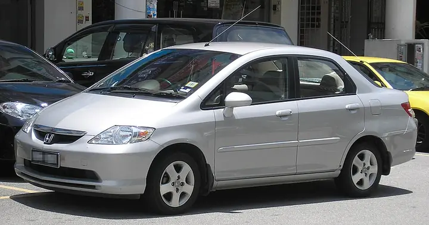
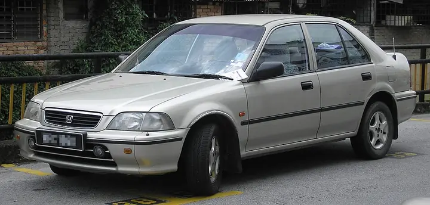
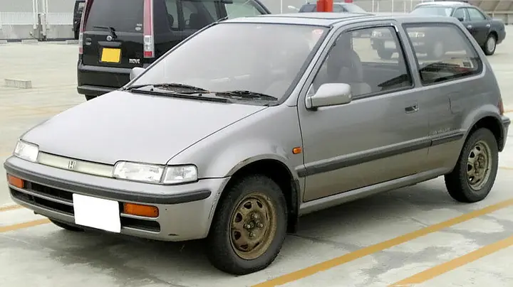
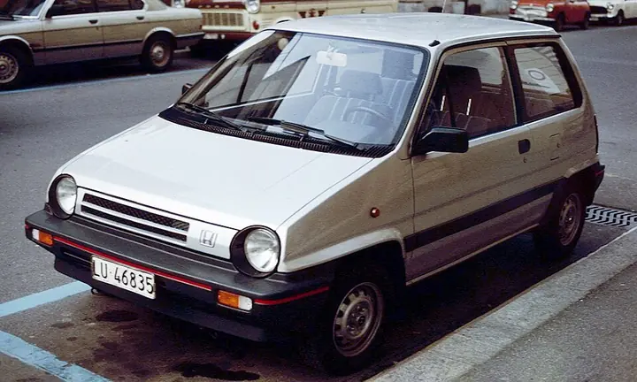

Honda City
Seventh generation (GN; 2019) · 2019–present
Abstract
This generation of the Honda City was built 2019–present in Thailand: Ayutthaya; Prachinburi, India: Tapukara (HCIL), Malaysia: Alor Gajah, Malacca and other plants. Body styles: 4-door sedan, 5-door hatchback. Layout: Front-engine, front-wheel-drive. Designed by Norihito Ōnuma, Taishi Ogawa (hatchback).
_01.jpg){kind=link}
1Specifications
| Production | 2019–present |
|---|---|
| Assembly | Thailand: Ayutthaya; PrachinburiIndia: Tapukara (HCIL)Malaysia: Alor Gajah, MalaccaVietnam: Vĩnh Phúc (Honda Ô tô Vĩnh Phúc)Indonesia: Karawang, West Java (HPM, until 2025)Brazil: Sumaré, São Paulo |
| Designer | Norihito ŌnumaTaishi Ogawa (hatchback) |
| Body style | 4-door sedan5-door hatchback |
| Layout | Front-engine, front-wheel-drive |
| Platform | Honda Global Small Car |
| Engine | Petrol:1.0 L P10A6 I3 turbo (Thailand)1.5 L L15Z1C I41.5 L L15ZF I4Petrol hybrid:1.5 L LEB8 Atkinson cycle i-MMD I41.5 L LEB-H5 Atkinson cycle i-MMD I4Diesel:1.5 L N15 I4 turbo (India) |
| Electric motor | 79 kW AC PMSM |
| Transmission | 6-speed manualCVTeCVT (hybrid) |
| Wheelbase | 2589–2600 mm |
| Length | 4553 mm (sedan)4345 mm (hatchback) |
| Width | 1748 mm |
| Height | 1467–1489 mm |
| Weight | 1065–1217 kg |
| Also called | Honda Ballade (South Africa, sedan, until 2025) |
| Related | Honda Elevate/WR-VHonda Fit/Jazz/Life (fourth generation)Honda HR-V/Vezel (third generation) |
| Predecessor | Honda Fit/Jazz (third generation) (hatchback, Southeast Asia and South America) |
2Versions
- Sedan
- First facelift
- Second facelift
- Hatchback
3Previous generations

.jpg){kind=link}

_VTi-L_sedan_(2011-01-13).jpg){kind=link}

_(front),_Serdang.jpg){kind=link}

_(front),_Kajang.jpg){kind=link}




4Generation by generation
Length +35% from the first to the last
AA 19813,380 mm
GA 19863,560 mm
3A 19964,225 mm
GD 20024,390 mm
GM2 20084,420 mm
GM4–9 20134,442 mm
GN 20194,553 mm
Weight +66% from the first to the last
AA 1981640 kg
GA 1986680 kg
3A 1996940 kg
GD 20021,190 kg
GM2 20081,095 kg
GM4–9 20131,029 kg
GN 20191,065 kg